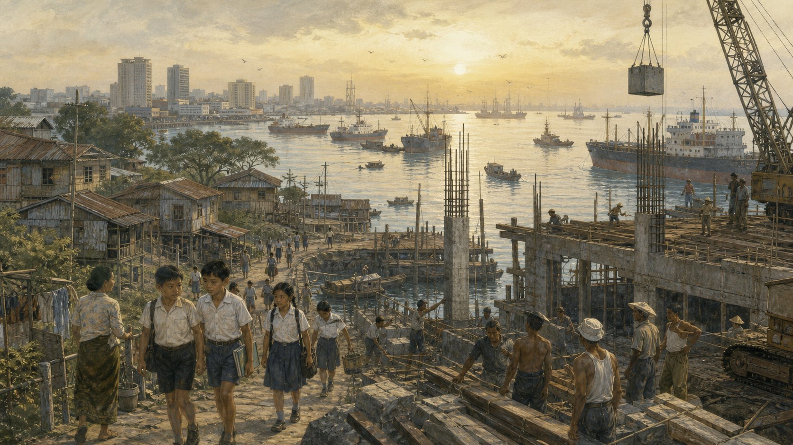

关键地点关系
1965年8月9日上午，新加坡电台播出一份只有几页纸的公告：从这一天起，新加坡不再是马来西亚的一部分。街上没有庆祝独立的游行，许多店铺照常开门；港口的吊杆仍把麻袋和木箱移上移下。下午的电视记者会上，李光耀讲到共同生活的理想时一度停住，擦去眼泪。这个镜头后来被反复播放，容易让人以为一个国家诞生于某位领袖的悲伤。可真正决定它能否活下去的，是镜头之外数百万次具体选择：水从哪里来，年轻人怎样保卫海岛，货船为何停靠，邻国为什么愿意合作，大国又为何不愿轻易把它推倒。

不是“终于独立”，而是“忽然独自”
许多国家的独立故事都有一个清楚的对手：殖民者撤走，旗帜升起，长期争取终于实现。新加坡的1965年却更像一次失败后的分家。它曾是英国殖民港口，1942年被日军攻陷，战后重新由英国统治；1959年取得内部自治，1963年与马来亚、沙巴和砂拉越组成马来西亚。合并支持者相信，一个共同市场能给岛上的工厂和工人更大出路，也能让新加坡摆脱殖民地身份。
两年后，这场婚姻破裂了。中央与新加坡政府在税收、共同市场推进速度和政治竞争上矛盾加深；更危险的是，双方对国家应怎样组织多族群社会有不同想象。吉隆坡的制度承认马来人的特殊地位，新加坡执政党则提出“马来西亚人的马来西亚”。1964年，新加坡发生严重族群骚乱。语言一旦从政策争论变成“谁才真正属于这里”，每一次街头冲突都会让妥协更难。
因此，8月9日不是预先设计的胜利终点，而是一场政治离婚的生效日。马来西亚国会通过宪法修正，把新加坡逐出联邦。新加坡人口约两百万，土地狭小，缺少天然资源，连相当部分淡水都依靠跨越柔佛海峡的管道。英国军事基地提供大量工作，却已准备缩减驻军。印度尼西亚与马来西亚的“对抗”尚未完全结束。一个没有战略纵深的城市国家，第一次必须自己回答所有国家问题。
史料怎样读：眼泪不是政策文件
李光耀记者会影像是真实史料，它告诉我们当事人如何感受分离，却不能单独解释分离原因。理解这一天，还要并读马来西亚国会文件、分离协议、骚乱记录以及不同政治人物的回忆。回忆录能提供内部视角，也会受后来成败影响。
当时没有人能保证新加坡会成功。把后来的高楼、机场和金融中心倒推回1965年，会造成一种错觉：仿佛聪明的计划必然带来繁荣。事实上，政策会遇到罢工、失业、住房短缺、国际衰退和邻国猜疑；有些选择提升效率，也缩窄政治空间。历史真正值得追问的，不是“奇迹配方”，而是一个脆弱国家怎样不断降低最坏结果发生的概率。
港口不会自动带来繁荣
摊开地图，新加坡像马来半岛末端的一粒铆钉，守在连接印度洋与南海的航道旁。地理位置是礼物，也是陷阱。船只可以从附近经过，却不必停靠；航线可以改道，港口可以淤塞，竞争者可以降低费用。所谓“扼守海峡”并不等于能命令世界交税。对于小国，更实际的问题是：怎样让货主觉得在这里停靠更快、更稳、更值得信任？
殖民时期的自由港把锡、橡胶和日用品汇聚到此，也形成依赖转口贸易的经济结构。独立后，周边国家发展自己的港口，英国驻军撤离会让服务业骤失顾客，单靠搬运别人的货物并不稳妥。政府转向出口导向工业化：建设裕廊工业区，吸引跨国公司设厂，把本地劳动力接进全球生产网络。这条路与当时一些新独立国家强调进口替代、国有重工业不同。
跨国公司为什么来？低工资只是早期条件之一，更关键的是港口、电力、道路、英语工作环境、劳资秩序和可预期的合同。国家把住房、教育、卫生、反腐与经济政策绑在一起：工人住得较稳定，孩子接受基础教育，企业更容易训练员工；行政人员若不能随意索贿，投资者就能估算成本。这并非慈善与增长的简单二选一，而是一套互相支撑的制度工程。
普通人的感受比宏观曲线复杂。住进组屋可能告别拥挤、火灾和露天厕所，也意味着旧村落、街坊关系和谋生方式被重新安排。进入工厂能获得工资和训练，却要适应钟表、流水线与管理纪律。国家发展的速度落在每个家庭身上：有人上升，有人被迁移，有人觉得秩序带来自尊，也有人认为选择变少。把所有人都写成“奇迹受益者”，会抹掉现代化的代价。
父子暂停一下
假如你住在一个海边村落，政府提供更卫生的组屋，却要求全村搬迁，你会怎样比较个人记忆、社区关系与公共安全？“生活改善”能否只用收入和面积衡量？
国防不是买几架飞机
1965年的新加坡没有一支成熟军队。殖民地时代的安全主要由英国负责，而新国家周围都是更大的邻居。领导层担心的，不只是外敌登陆，也包括族群冲突、破坏活动和社会在恐慌中分裂。于是1967年实行国民服役，让年轻男性接受军事训练。它迅速扩大后备力量，也把国家身份变成身体经验：穿同样制服、服从同样命令、学习把不同语言和家庭背景的同伴当作战友。
军队建设借鉴以色列的训练经验，采购来源却刻意多样化；与英国、澳大利亚、新西兰、马来西亚保持五国联防安排，又同美国发展设施使用和训练合作。这里的逻辑不是寻找一个永远保护自己的“大哥”，而是增加任何潜在冲突的成本，同时避免安全完全被一国的政策转弯绑架。威慑的可信度来自训练、后备动员、外交关系和国内韧性，而不只是武器数量。
后来提出的“全面防卫”把军事之外的民事、经济、社会、心理和数字领域也纳入安全。这个概念有现实根据：粮食几乎依靠进口，能源和海底电缆连接外部，网络攻击或港口停摆未必需要一发炮弹，就能扰乱城市生活。疫情期间，口罩、病床和供应链进一步显示，国家安全与超市货架之间只有几天航程。
但安全语言也可能扩张。若政府把批评都解释成削弱团结，社会会失去纠错能力；若公民只在危机时服从，却不了解政策理由，韧性也可能很脆。新加坡经验最有意思的地方，不是证明“严格管理一定正确”，而是提醒我们：小国确实面对高风险，同时仍要讨论安全、自由与信任之间应画在哪里。
离得最近的人，最难也最重要
地图上的邻居不能更换。新加坡与马来西亚曾激烈分离，却仍由公路、铁路、水管、电网、亲属和每日通勤连接；与印度尼西亚隔海相望，空气、航运与安全问题也跨越边界。独立初期，新加坡若把邻国永久当成敌人，军费和恐惧都会吞噬城市；若假装矛盾不存在，又会在每次争议中措手不及。
1967年，印度尼西亚、马来西亚、菲律宾、泰国和新加坡共同成立东南亚国家联盟。东盟起初并不是一个像欧盟那样拥有强大共同法律的组织，更像一张让领导人经常见面、让官员习惯协商的桌子。其重视主权、不干涉和共识的做法常被批评行动迟缓，却也让制度差异很大的成员愿意坐在一起。
合作并未消除争议。水价、岛屿主权、填海、空域、铁路土地和海峡航行都曾引发紧张。关键变化是，争端越来越多地被放进谈判、仲裁或国际法院的程序，而非直接变成武力较量。2008年，国际法院把白礁主权判给新加坡、中岩礁判给马来西亚；双方都接受裁决。这种结果不等于谁都满意，却显示规则可以给“如何结束争论”一个共同答案。
新加坡的担心
小国若容许条约随强国方便而改变，下一次受损的可能就是自己，因此特别强调合同、边界和国际法。
邻国的感受
体量很小却经济富裕的新加坡，有时会被看成过分精明或缺乏体谅。法律正确不自动带来情感信任，外交还需顾及历史与尊严。
所谓睦邻，不是从此没有冲突，而是让冲突不必每次都重新定义彼此。水管照常供水，货车照常过关，学生仍跨境探亲，争议则由另一条轨道处理。对小国来说，日常连接本身就是安全资产：当太多人从和平关系中获益，破坏关系的成本便会上升。
在大国之间，不等于站在正中间
冷战时期，美国在亚洲维持军事存在，中国经历革命与开放，苏联拥有远东力量，日本重新成为经济强国。新加坡需要西方市场、资本和安全环境，也生活在华人占多数、邻国多为马来人口的东南亚。任何把它简单归为“亲美”或“亲中”的标签，都只能看到一部分。
新加坡早期坚决反对共产主义运动，与西方合作，却没有成为条约盟国；它支持美国在地区发挥平衡作用，同时在1990年与中华人民共和国建交，时间晚于多数东盟创始国，以免被邻国怀疑借族群联系替中国行事。建交后，两国贸易、投资与政府交流迅速扩大，新加坡又持续同美国、欧洲、日本、印度和澳大利亚发展关系。
这种做法常被概括为“不要选边”。更准确的说法是：不把所有议题捆成一个阵营身份。新加坡可能欢迎美国地区存在，也可能反对美国1983年入侵格林纳达；同中国保持密切经济联系，也坚持海洋法、国家主权和航行秩序。2022年俄罗斯全面入侵乌克兰后，新加坡实施制裁，理由不是它突然加入欧洲阵营，而是小国不能接受以武力改变另一国边界成为常态。
然而，议题拆分越来越难。芯片、人工智能、海底电缆、港口和金融支付都被纳入国家安全；大国要求伙伴证明忠诚，企业也必须在不同规则间选择。小国无法假装竞争不存在，只能提高判断精度：哪些原则不能交易，哪些合作可以并行，哪些依赖需要分散，哪些模糊空间值得保留。
父子暂停一下
如果两个最重要的朋友发生冲突，一个负责你的安全，一个购买你最多的商品，你会怎样决定？“不选边”什么时候是独立判断，什么时候可能只是逃避代价？
让世界在你的存在中拥有利益
小国没有足够力量命令别人，却能让别人觉得它不可轻弃。新加坡把港口、机场、炼油、金融、仲裁、维修、数据连接和会议外交逐步叠加在同一座城市里。货船在这里加油，跨国公司在这里结算，争议双方在这里仲裁，各国官员在这里会面。每一项都可被替代，但组合起来，替代成本便提高了。
1971年五国联防安排建立，1973年新加坡主办首次东南亚国家联盟峰会之外的多边活动不断增加；后来香格里拉对话让各国防务官员在同一酒店公开演讲、私下交谈。新加坡也参与建立亚太经合组织、世界贸易组织谈判和跨区域贸易协定。会议不会自动阻止战争，却能增加沟通渠道，让小国不只是坐在别人制定的菜单旁。
法律服务是另一种“变大”。联合国海洋法公约保障航行与沿岸国权利，世界贸易组织规则约束歧视性关税，国际仲裁让跨国合同不必完全依靠权力。规则从来不完美，大国有时违反，小国也会选择性解释；但没有规则时，实力差距会更直接地决定结果。因此新加坡投入外交官和法律专家，试图参与规则书写，而非只等待规则降临。
相关性也有脆弱一面。金融中心可能被洗钱利用，航运繁荣增加碳排放，全球税制变化会削弱竞争优势，过度依赖外来人才又可能引起住房、工资与身份焦虑。成功策略不会永久有效。一个国家若把过去经验变成自我赞美，便会错过世界改变的声音。
多族群城市如何成为共同国家
新加坡不是先有一个同质民族，再建立国家。华人、马来人、印度人、欧亚裔和其他群体在不同年代来到港口，家庭语言、宗教与历史记忆并不相同。1964年的骚乱提醒领导层：若多数族群把国家当作自己的延伸，周边环境和内部信任都会迅速恶化。因此宪法承认马来人为本土人民，马来语为国语，同时英语、华语、马来语和泰米尔语均为官方语言。
公共住房政策把不同族群安排在同一社区，学校用英语连接全球经济，同时要求学生学习相应母语。选举制度中也有确保少数族群候选人的安排。支持者认为这些措施让共同生活不只是一句口号；批评者则担心，官方分类把流动的身份固定成方格，配额和集体代表制可能限制个人选择或政治竞争。
国家认同还通过兵役、国庆、学校课程和共同危机形成。它不是虚假的，因为许多人确实在这些制度中建立跨族群关系；它也不是天然完成的，因为移民比例、宗教复兴、网络舆论和阶层差距会不断提出新问题。一个华人占多数的国家怎样避免被误认作“海外中国”，本身也影响外交：新加坡一再强调自己是东南亚主权国家，而非任何文明大国的附属。
内部团结与外部战略由此相连。若国内族群彼此怀疑，大国就更容易借文化、宗教或信息影响挑动分裂；若政府以防渗透为由压制正常文化联系，又会制造疏离。真正稳固的社会不是没有差异，而是人们相信争论之后仍有共同规则，失败者明天仍能继续说话和生活。
成功叙事里不能消失的人
讲新加坡，最容易落入两种神话：一种把它描绘成全靠强人和纪律创造的完美机器；另一种把它缩写成缺乏自由的富裕城市。两种说法都省略了真实历史。人民行动党长期执政确实带来政策连续性、行政能力和低腐败，也运用法律、媒体制度、选区安排和对反对者的诉讼维持显著优势。安全法下的长期拘留、工会重组与媒体管制，至今仍有不同评价。
治理者的叙事
早期国家处在族群冲突、共产主义组织和外部威胁之间，若没有果断集中资源，生存窗口可能迅速关闭。
批评者的叙事
真实危险并不意味着所有限制都必要；把成功全归功于控制，会低估社会组织、工人、企业与普通公民，也让权力较少受到检验。
这两种叙事不是简单的真假选择。冷战威胁和社会动荡可由档案核实，某项限制是否“必要”却包含政治判断；经济增长数据可以比较，但恐惧、沉默和安全感不在同一张表里。历史阅读要允许一句话同时成立：制度确实解决了严重问题，制度也可能制造新的不平等。
移工经验尤其提醒我们扩大镜头。建筑、造船、护理和家务劳动支撑城市运行，但许多低薪外籍工人的住房、流动和家庭团聚权利与公民不同。新加坡模式依赖全球人才，也形成分层劳动力制度。若只看公民平均收入，便看不到谁在城市边缘承担成本。
成熟的国家故事不应害怕复杂。承认政策代价不会抹杀成就，讨论自由也不等于否认安全。相反，只有把失去家园的村民、被拘留者、服役青年、女工、移工和企业家都放回叙事，所谓“小国战略”才不只是领导人的棋局，而是千万人共同承受的历史。
站稳不是站着不动
截至2026年8月，新加坡仍是东盟成员、全球航运和金融节点，也仍面对1965年无法想象的新风险。中美战略竞争把技术标准、数据、投资审查和供应链都变成外交议题；气候变化让低洼海岸面对长期海平面压力；能源、粮食和水仍依赖外部连接；人口老龄化和生活成本影响社会信任。
新加坡没有消除依赖，而是把单一依赖改造成网络：水源包括进口、集水、再生水和海水淡化；能源寻求更多来源和区域电网；贸易协定横跨不同集团；国防伙伴多元；外交同时经营东盟、联合国和小国论坛。网络也会一起受冲击，所以冗余必须不断更新。
它最深的战略或许不是“平衡术”，而是三件相互约束的事：先看清力量差距，不用口号替代能力；再坚持对自己有保护作用的规则，即使朋友违反也要敢于表达；最后让国内社会愿意共同承担风险。只有现实主义而无原则，小国会成为随风倒的工具；只有原则而无实力，承诺会变成愿望；只有国家能力而无社会信任，危机一来便可能从内部裂开。
回到1965年的港口，那些收音机旁的人并不知道未来。他们能做的不是预言，而是让明天多一点选择。小国站稳从来不是找到永不摇晃的位置，而是在每次海浪改变方向时，仍知道哪些绳索必须握紧，哪些船帆应当调整，又有哪些人不能被留在岸上。
一份朴素的独立文件
新加坡国家档案馆保存的《新加坡宣言》写在普通政府信纸上，留有装订和归档痕迹。档案馆依据参与起草者的口述史说明，分离文件在少数人之间秘密准备，因为当时既要修改马来西亚宪法，也要避免消息提前引发政治震荡。它不像胜利纪念品，更像一份紧急法律工程：先让国家在文件上成立，再用住房、就业、军队、学校和外交把纸面主权变成日常能力。
独立后的宪法安排也要回答1964年族群冲突留下的问题：多数人怎样使用民主权力，同时不让少数群体只靠多数人的善意生活。后来形成的少数族群权利审查机制、四种官方语言政策、公共住房族群配额和跨宗教管理各有不同功能，也各有争议。它们说明国家认同不是要求所有人忘记祖先文化，而是建立一套让差异能够共处的公共规则。规则可能限制个人选择，因此仍需要公开讨论成效、代价和替代办法；社会信任不能只靠制度设计，也要靠人们持续使用这些制度解决分歧。
关灯前，聊六个没有标准答案的问题
- 新加坡的成功有多少来自地理位置，有多少来自制度选择？怎样设计证据来比较？
- 小国强调国际法，是道德理想、现实利益，还是两者本就无法分开？
- 面对安全威胁时，哪些自由可以暂时限制，谁来判断“暂时”何时结束？
- “不选边”与“坚持原则”发生冲突时，一个国家应先说明什么？
- 公共住房中的族群配额促进了交往，却限制个人选择，你会怎样权衡？
- 如果一个国家的繁荣依赖权利较少的外籍劳工，这种发展模式应如何改变？
继续追索：档案与可靠来源
- 新加坡国家档案馆：Archives Online——独立广播、演说、照片与政府文件检索入口。
- 新加坡外交部：Small States——小国论坛及新加坡多边外交的官方说明。
- “Choice and Conviction”演讲全文——官方对小国外交原则的系统表述。
- 新加坡外交部：Major Power Blocs议会答复——如何区分“不选边”与“坚持原则”。
- 新加坡国防部：Total Defence——全面防卫概念与制度沿革。
- 《东盟宣言》（1967）——东盟成立时的原始文件。
- 国际法院：白礁、中岩礁和南礁案——新马领土争端的判决与诉讼材料。
- 联合国：Singapore Member State——新加坡加入联合国的基本记录。
- 世界银行：Singapore Overview——发展轨迹与经济结构概览。
- 世界贸易组织：Singapore and the WTO——贸易规则参与情况。